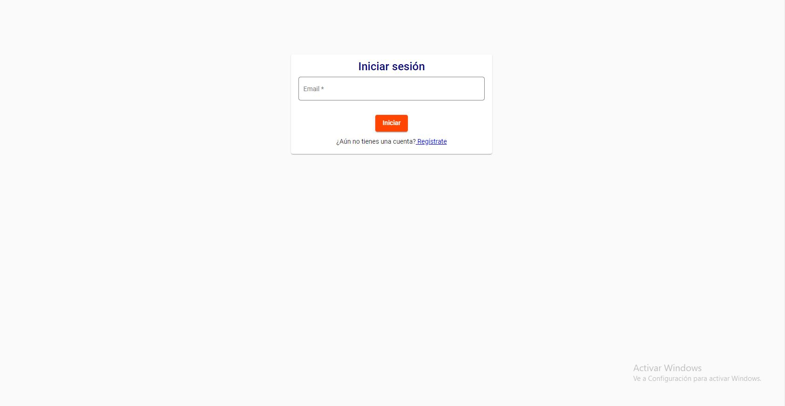

Iniciar sesión¶
Inicio de sesión
Descripción
Este componente de Login, está compuesto por contenedor, el cuál con la propiedades del fxFlex podemos otorgarle un re-dimencionamiento a nuestro componente dependiendo de la pantalla de nuestro usuario. Se desarrolla a modo de formulario, en el cuál posee un pequeño titulo que identifica dicha sección. dentro de nuestro formulario, solo tenemos un input de e-mail & un botón que tendrá el método onLogin(), el cuál validará si el correo existe o no en base de datos. y si el usuario no posee una cuenta, un hipervínculo que lo ayudará a registrarse en nuestra plataforma.
Importaciones
Para este componente, son fundamentales las importaciones del FormControl, FormGroup & Validators, para poder crear nuestro formulario y poder enviar todos los datos que este capture.
El authService nos ayudará para verificar la autenticidad de los datos entregados, permitiendonos saber si el cliente existe. Se importa Registro Services que es donde tenemos todos nuestros métodos para interactuar con nuestra base de datos. se importan los Mat Dialog para poder manejar los Modales.
import { Component, OnInit } from '@angular/core';
import { FormControl, FormGroup, Validators, EmailValidator } from '@angular/forms';
import { Router } from '@angular/router';
import { auth } from 'firebase';
import { AuthService } from '../../services/auth.service';
import { RegistrosService } from 'src/app/services/registros.service';
import { MatDialogConfig, MatDialog } from '@angular/material/dialog';
import { DialogComponent } from '../dialog/dialog.component';
import { AngularFireAuth } from '@angular/fire/auth';
- Desarrollo
En esta sección, iniciamos con nuestro componente creado en el HTML y estilizado en nuestro css.
<div
class="content"
fxLayout="row wrap"
fxLayoutGap="16px grid"
fxLayoutAlign="center center">
<div fxFlex="30%" fxFlex.xs="100%" fxFlex.sm="33%">
<div class="login-form">
<mat-card>
<mat-card-content>
<mat-card-title>Iniciar sesión</mat-card-title>
<p></p>
<form [formGroup]="loginForm" (ngSubmit)="onLogin()">
<mat-form-field appearance="outline">
<mat-label>Email</mat-label>
<input matInput type="text" formControlName="email" required />
</mat-form-field>
<p></p>
<button type="submit" mat-raised-button>Iniciar</button>
</form>
<p></p>
<p>
¿Aún no tienes una cuenta?<a [routerLink]="['/register']">
Regístrate</a
>
</p>
</mat-card-content>
</mat-card>
</div>
</div>
</div>
El desarrollo de nuestra lógica de desarrollo empieza por la creación de nuestro Form en el typescript
loginForm= new FormGroup({
emai: new FormControl('',[Validators.required, Validators.email])
})
Después de que tenemos nuestro Form listo para recibir información, podemos ir a nuestro método principal en donde vamos a primero, validar si el correo que se ingresó existe en nuestra base de datos, si sí, se usar el router para redirigir el usuario a Home. sino saldrá un Modal explicando que no existe este correo en nuestra base de datos.
async onLogin(){
console.log("funciona"+ this.loginForm.controls.email.value);
if(this.ValidarExistenciaCorreo(this.loginForm.controls.email.value)==true)
{
const user= await this.authSvc.login(this.loginForm.controls.email.value,
this.loginForm.controls.email.value);
if (user) {
//redirect to homePage
this.router.navigate(['/home'])
}
}
else{
//window.alert('correo no registrado');
const data={ titulo:'Advertencia', mensaje:'El correo no esta registrado en la BD'};
this.openDialog(data);
}
}
Como podemos observar, nuestro método onLogin, se vale de un Método llamado ValidarExistenciaCorreo, el cual es un método que espera un String y un Boolean. en este método, recorremos una lista de registros con un for y vamos comparando el String(correo) que nos entrega nuestro usuario final y lo comparamos con cada dato de correo existente en la base de datos
for (let i = 0; i < this.listaRegistros.length; i++) {
const element = this.listaRegistros[i];
const { email } = element.data;
if (correo == email) {
existeCorreo = true;
}
}
if (existeCorreo == true) {
respuesta = true;
}
else {
respuesta = false;
}
return respuesta;
}
por último, tenemos nuestro modal, el cuál es el método OpenDialog y recibe una variable data que puede ser cualquier tipo de dato. y es la que mostrará un mensaje una vez tengamos el correo erroneo.
openDialog(data:any) {
const dialogConfig = new MatDialogConfig();
dialogConfig.data = data;
//dialogConfig.data = { titulo:'Estado de registro', mensaje:'Exitoso'};
let dialogRef = this.matDialog.open(DialogComponent, dialogConfig)
dialogRef.afterClosed().subscribe(value => {
this.resDialog=value;
console.log(`Dialog sent: ${value}`);
});;
}
}